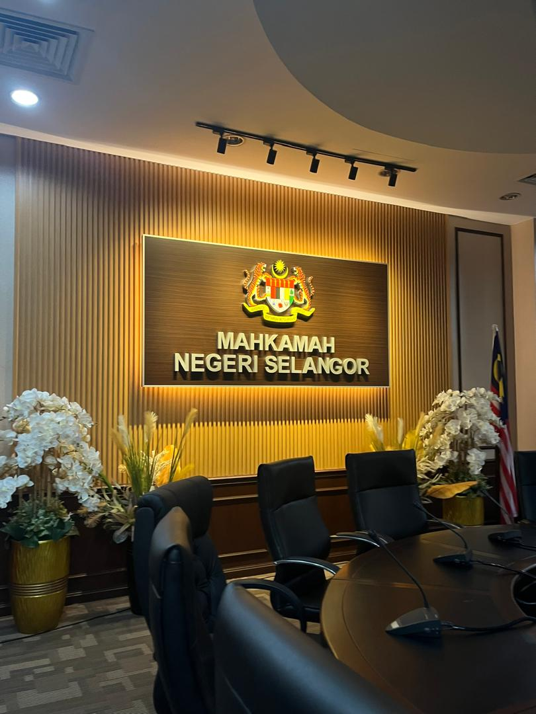

Internship at Mahkamah Shah Alam
Completed my internship at Mahkamah Shah Alam under the Human Resource and Administration Department. I was actively involved in observing daily office routines, assisting with staff coordination, and learning practical administrative skills essential for future career development.

Internal Website Project
Developed a functional internal website to manage staff data using HTML, PHP, and MySQL. The project involved database design, UI planning, and testing to ensure smooth usage.

Administrative Tasks
Assisted in document handling, data entry, record updates, and small administrative coordination. These tasks enhanced my attention to detail, time management, and confidentiality skills.

Skills Gained
Developed responsibility, teamwork, communication, and professional work ethics. Additionally, I strengthened my digital literacy and administrative understanding.